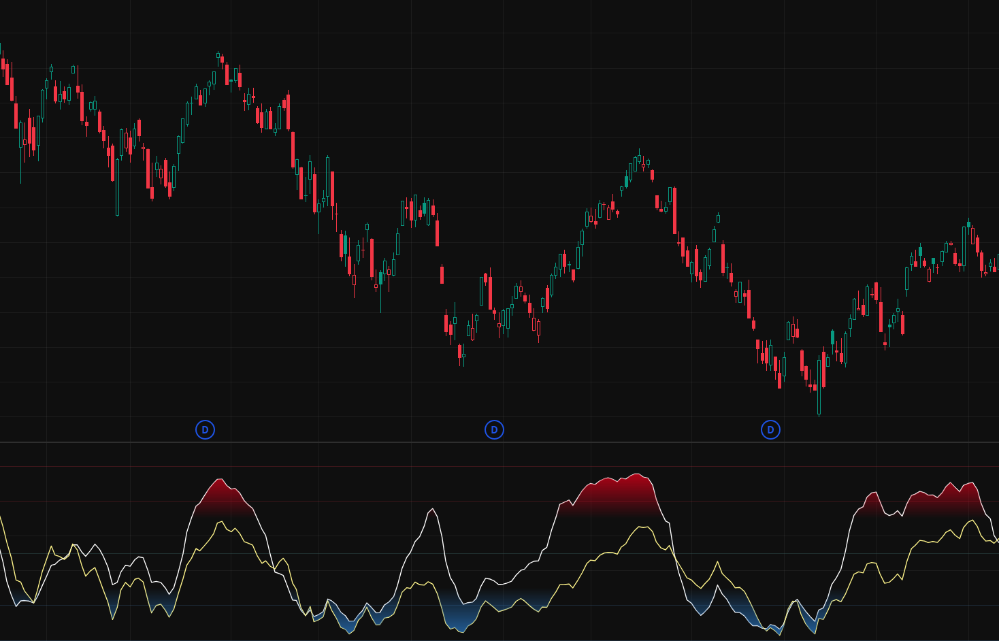
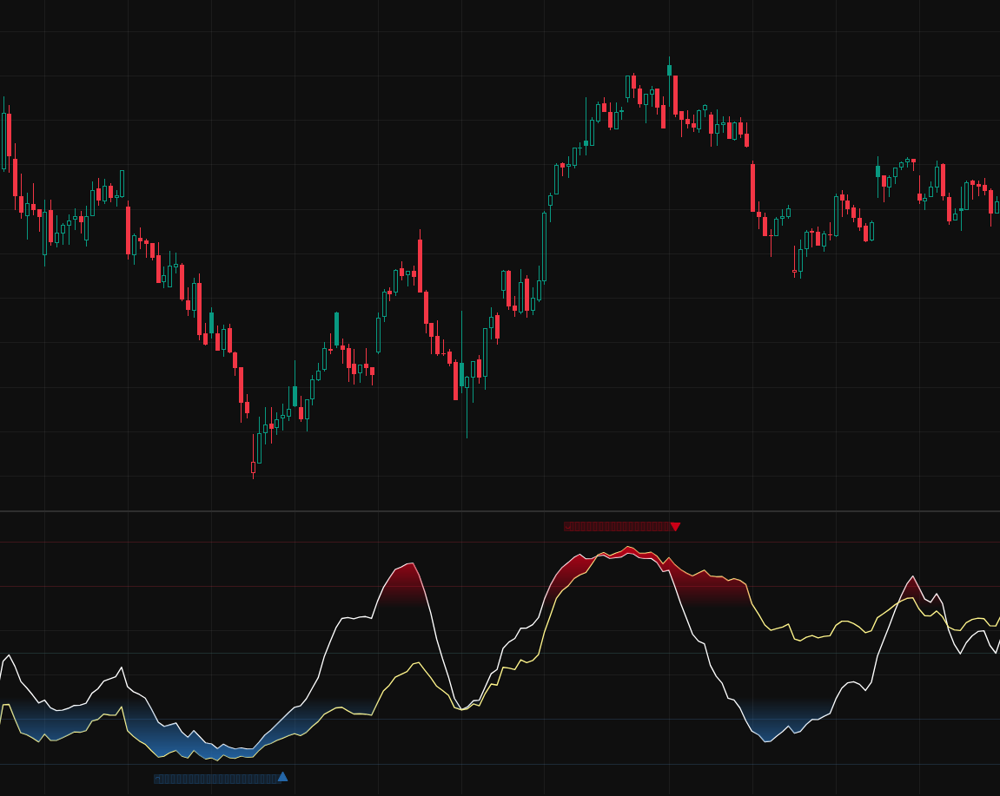
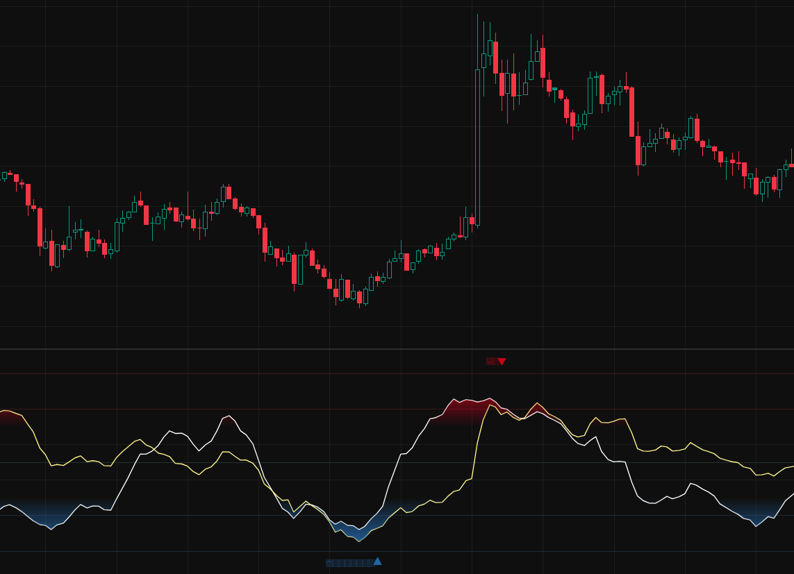

The DoubleTrends™ Signal
DoubleTrends™ is built on a double trend exhaustion model — a momentum oscillator derived from Williams %R that flags when a sustained selloff has run out of downside energy. The production alert applies this rule to the S&P 500 index for ETF investors who want a disciplined timing reference rather than another chart to monitor.
Two horizons of Williams %R
Williams %R is a momentum oscillator that measures where the latest close sits inside the recent high-low range. It moves between 0 and −100: readings near −100 mean price is pinned near the bottom of its range, the hallmark of an oversold market.
DoubleTrends™ computes %R over two periods at once — a fast 21-bar window and a slow 112-bar window — so it reads short-term momentum and the broader trend in a single view. Each line is smoothed with an exponential moving average (7 on the fast, 3 on the slow) to cut erratic noise without lagging the turn.

Exhaustion first, then the reversal
When both the fast and slow %R fall to or below −80, the market is deeply oversold on both horizons at the same time — selling pressure is stretched. The indicator marks this state with square warnings: the trend may be exhausting, but it has not turned yet.
The actual DoubleTrends™ alert waits for the reversal. When %R climbs back out of the oversold zone, a triangle marks the buy reversal — objective evidence that downside momentum has improved, not merely that price has fallen. That climb-out, not the entry into oversold, is the signal you receive.

Built around the oversold side
The oscillator computes both overbought and oversold extremes, but DoubleTrends™ only acts on the oversold reversal. That is where the signal has been precise on broad-index daily charts; the overbought side is weaker, so we don't build alerts on it. This is a dip-buying tool, not a top-caller.
A signal is evidence, not a guarantee. In a slow, grinding bear market it can fire early, before the final low. It also may fire on smaller drawdowns that never become major lows. That is the cost of using a rule that reacts to exhaustion rather than waiting for hindsight.
The practical use case is narrow by design: a disciplined cue for broad-index ETF investors to review a planned cash deployment, contribution, or staged entry. It is not a short-term trading system, a top-calling tool, or a personalized allocation recommendation.

Get the signal, not the screen-watching.
DoubleTrends™ tracks the S&P 500 index every day and sends a single alert when the oversold reversal fires — built for ETF investors using funds such as VOO, SPY, or IVV. The goal is not to guess the exact bottom; it is to make the moment visible when the rule says selling pressure has started to turn.
SubscribeReference & method
Built on Williams %R (Fidelity Investments), computed on two periods (21 and 112) with EMA smoothing (7 and 3) and an oversold threshold of −80 on both. Educational information only — not financial, investment, or trading advice. Past performance does not guarantee future results.